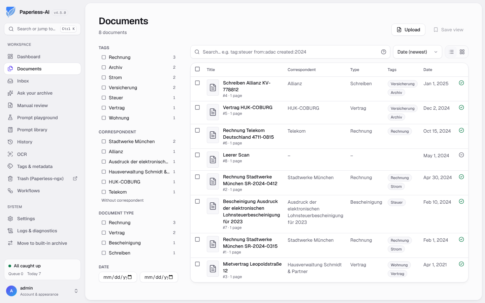
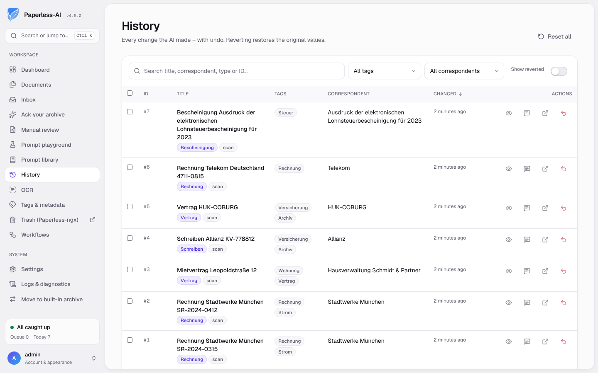
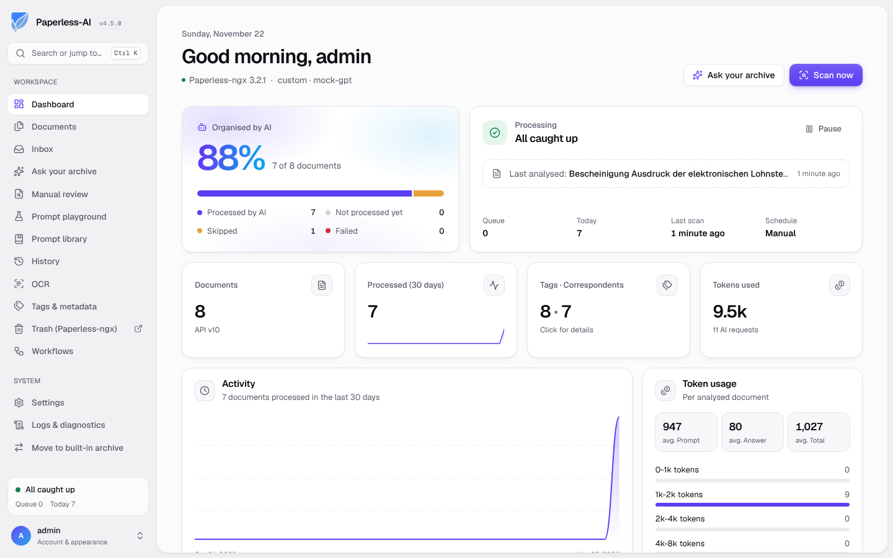

See it
Light and dark theme, a command menu (⌘K / Ctrl+K), and it works on the phone.




Paperless-AI fills in titles, tags, correspondents, dates and custom fields, reads bad scans with local OCR and answers questions about your whole archive – as an extension of Paperless-ngx or on its own with the built-in archive.

The setup asks once. An installation with Paperless-ngx can move to the built-in archive later – with the same document ids.
Paperless-ngx (2.x and 3.x) stays your archive. Paperless-AI analyses new documents on a schedule or instantly through a Paperless-ngx workflow and writes the results back.
No Paperless-ngx, Redis or Postgres needed: upload, watch folders, e-mail, WebDAV and sharing from the phone; full-text search for 200,000+ documents, versions, a trash and libraries with roles for families and teams. The mobile apps made for Paperless-ngx connect to it as well.
With OpenAI, Anthropic (Claude), Azure OpenAI, any OpenAI-compatible API – or fully local with Ollama.
Title, tags, correspondent, document type, date and custom fields for every new document. Prompt rules give each kind of document its own prompt.
Questions in plain language over all documents – hybrid keyword and vector search, answers that cite their sources.
Scans and photos are read with PaddleOCR on your CPU or NVIDIA GPU – the text is only replaced when it reads better.
Built-in archive: upload, a REST API, watch folders for scanners, IMAP mailboxes with rules, a WebDAV inbox and the share menu of your phone.
Search syntax like tag:steuer from:adac created:2024; duplicate tags and correspondents found and merged in one click.
When a document arrives or is analysed and it matches, set tags and fields, extract values with the AI, send e-mails or webhooks – with test runs and undo.
Appointments, payment due dates and deadlines from your documents, as a private iCal subscription.
Two-factor authentication, single sign-on with OpenID Connect, API keys with permissions – and a history in which every change can be undone.
Light and dark theme, a command menu (⌘K / Ctrl+K), and it works on the phone.


One container, one data volume. No restart after the setup.
# docker-compose.yml
services:
paperless-ai:
image: clusterzx/paperless-ai:latest
container_name: paperless-ai
restart: unless-stopped
ports:
- "3000:3000"
volumes:
- paperless-ai_data:/app/data
extra_hosts:
- "host.docker.internal:host-gateway"
volumes:
paperless-ai_data:
docker compose up -dhttp://<your-server>:3000latest-cuda – see the installation guide.Complete the setup before the instance is reachable from other networks, and keep Paperless-AI in your local network or behind a VPN or an authenticating reverse proxy. Coming from 3.x? See Upgrading.
Step-by-step guides in the repository.